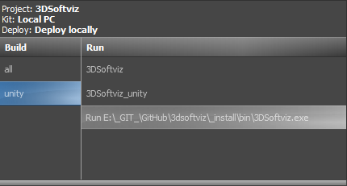

Inštalačný návod (VC10)¶
v1.5 (17. 11. 2015)
Návod pre Windows¶
Tento návod bol úspešne otestovaný na operačných systémoch Windows 7, 8, 8.1, 10.
Potrebný softvér¶
Na inštaláciu potrebujeme klonovať projekt 3DSoftViz (Tím č.4 klonuje z /cimox/3dsoftviz) z Githubu a stiahnuť nasledovné:
- CMake (v3.5.0)
- OpenSceneGraph (jeden z nasledujúcich)
- Kinect for Windows SDK 1.8
- Microsoft VisualStudio 2010 SP1 (okrem Express edition!)
- Qt (v4.8.5)
- QtCreator (v3.6.1)
- OpenCV (v2.4.10)
- Boost (v1.57.0)
- RapidEE - program na prácu s premennými prostredia
- Inštalácia knižnice 3rd party dependencies VC10
- OpenNI2
- NiTE2
- Debugging Tools for Windows
- FreeGlut
Postup inštalácie¶
Nainštalovať CMake. (Cesta je v dokumente označená ako %CMAKE_DIR%)
Nainštalovať Qt (%QT_DIR%)
Nainštalovať QtCreator do zložky Qt
Vytvoriť zložku OpenSceneGraph (%OSG_DIR%) a %OSG_DIR%/ThirdParty
Rozbaliť 3rd Party Knižnice (VC10) do %OSG_DIR%/ThirdParty/
Rozbaliť FreeGlut do %OSG_DIR%/ThirdParty/VC10/x86
V prípade stiahnutia zbuildovaných súborov OSG (mega.nz)
- Rozbaliť zložky build a install do %OSG_DIR%
- Vynechať nasledujúci krok.
V prípade stiahnutia iba zdrojových súborov OSG (oficiálna stránka)
Rozbaliť OSG_3.4 do %OSG_DIR%
Vytvoriť zložku build a install v %OSG_DIR%
Premenovať súbory:
%OSG_DIR%/ThirdParty/VC10/x86/include/GL/glut.h > ../glut.h.bak %OSG_DIR%/ThirdParty/VC10/x86/lib/glut32.lib > ../glut32.lib.bak %OSG_DIR%/ThirdParty/VC10/x86/lib/glut32D.lib > ../glut32D.lib.bakSpustiť CMake (cmake-gui.exe)
- source code > %OSG_DIR%/OSG_3.4
- binaries > %OSG_DIR%/build
- stlačiť Configure (VS2010 kompilátor)
- stlačiť Generate
- ak došlo k erroru: File > Delete Cache a skúsiť znovu
CMake pre OSG
Nájsť súbor OpenSceneGraph.sln v %OSG_DIR%/build
Otvoriť súbor vo VS2010
Nastaviť Solution Configuration na Debug
Nájsť projekt ALL_BUILD > pravý klik > build
Po skončení nájsť projekt INSTALL > pravý klik > build
Nastaviť Solution Configuration na Release
Nájsť projekt ALL_BUILD > pravý klik > build
Po skončení nájsť projekt INSTALL > pravý klik > build
Presunúť nainštalované súbory (default c:/Program Files (x86)/OpenSceneGraph) do %OSG_DIR%/install
Rozbaliť FreeGlut do %OSG_DIR%/ThirdParty/VC10/x86/ (prepísať súbory)
Nainštalovať OpenCV (%OPENCV_DIR%)
Rozbaliť Boost (%BOOST_DIR%)
Ideálne je mať všetko na spoločnom mieste kvôli prehľadnosti, napr.

Nainštalovaný SW
Nainštalovať a otvoriť RapidEE, v ktorom sa vykonajú tieto zmeny:
do PATH pridať premenné:
- %CMAKE_DIR%/bin
- %QT_DIR%/bin
- %QT_DIR%/Qtcreator/bin
- %OSG_DIR%/build/bin
- %OSG_DIR%/ThirdParty/VC10/x86/bin
- %OPENCV_DIR%/build/x86/vc10/bin
PATH premenná
Vytvoriť premennú CMAKE_INCLUDE_PATH a pridať:
- %OSG_DIR%/install/include
- %OSG_DIR%/ThirdParty/VC10/x86/include
- %OPENCV_DIR%/build/include
CMAKE_INCLUDE_PATH premenná
Vytvoriť premennú CMAKE_LIBRARY_PATH a pridať:
- %OSG_DIR%/build/lib
- %OSG_DIR%/install/lib
- %OSG_DIR%/ThirdParty/VC10/x86/lib
- %OPENCV_DIR%/build/x86/vc10/lib
CMAKE_LIBRARY_PATH premenná
Vytvoriť premennú BOOST_INCLUDEDIR a pridať: %BOOST_DIR%/boost
Vytvoriť premennú BOOST_LIBRARYDIR a pridať: %BOOST_DIR%/libs
Vytvoriť premennú BOOST_ROOT a pridať: %BOOST_DIR%
BOOST premmené
Vytvoriť premennú OPENCV_DIR a pridať: %OPENCV_DIR%/build

OPENCV_DIR premenná
Naklónovať projekt 3DSoftViz cez git shell (%3DSoftViz%)
Vytvoriť v priečinku %3DSoftViz% priečinky _build a _install
Spustiť QtCreator. Tools > Options… > Build and Run:
záložka CMake – zadať cestu %CMAKE_DIR%/bin/cmake.exe
záložka Compilers – ak existuje VS2010 tak sú autodetected
záložka Qt Versions – zadať cestu %QT_DIR%/bin/qmake.exe
záložka Kits – vytvoriť nový a vybrať hodnoty nasledovne:
QtC Kits nastavenia
záložka General – nastaviť default build directory: %3DSoftViz%/_build
Potvrdiť – OK
File > Open File or Project… > vybrať CMakeLists.txt z %3DSoftViz%
Zadať do poľa Arguments jeden z nasledujúcich prepínačov:
- -DCMAKE_BUILD_TYPE=Debug
- -DCMAKE_BUILD_TYPE=Release
Vybrať z nastavený generátor – NMake Generator (názov kitu)
(Chyba: Generátor nebol nájdený <riešenie>)
Stlačiť Run CMake
Ukončiť – Finish
Vybrať Projects > Build & Run > Build, v časti Edit build configuration kliknúť na Add > Clone selected, nazvať napr. „unity“
Prejsť na vytvorený build config. „unity“, v časti Build Steps otvoriť Details a zaškrtnúť pri build step jom.exe možnosť install_unity
QtC build project
Skontrolovať nastavenie build config – unity
QtC build config
Stačiť Build (kladivko vľavo dole)
Po úspešnom zbuildovaní vybrať Projects > Build & Run > Run, v časti Run pridať Add > Custom Executable a nastaviť:
executable: %3DSoftViz%/_install/bin/3DSoftviz.exe
working directory: %3DSoftViz%/_install/bin/
QtC run project
Skontrolovať nastavenie run config – zadaná cesta

QtC run config
Spustiť program pomocou zeleného tlačidla Run
Rozšírenie 3DSoftviz o Kinect¶
Nainštalovať Kinect for Windows
Skontrolovať v RapidEE či sa vytvorila premenná %KINECTSDK10_DIR%
KINECTSDK10_DIR premenná
Nainštalovať OpenNI2 (OpenNI-Windows-x86-2.2.msi)
- x86! – inak sa môžu vyskytnúť problémy s linkovaním
Skontrolovať v RapidEE či sa vytvorili premenné:
%OPENNI2_INCLUDE%
%OPENNI2_LIB%
%OPENNI2_REDIST%
%OPENNI2_ROOT%

NITE2 premenné
Nainštalovať NiTE2 (NiTE-Windows-x86-2.2.msi)
- x86! – inak sa môžu vyskytnúť problémy s linkovaním
Skontrolovať v RapidEE či sa vytvorili premenné:
%NITE2_INCLUDE%
%NITE2_LIB%
%NITE2_REDIST%
%NITE2_ROOT%

OPENNI2 premenné
Pridať do premennej CMAKE_INCLUDE_PATH:
%OPENNI2_INCLUDE%
%NITE2_INCLUDE%
OPENNI2 premenné
Pridať do premennej CMAKE_LIBRARY_PATH:
%OPENNI2_ROOT%/Driver
%OPENNI2_REDIST%
%OPENNI2_REDIST%/OpenNI2/Drivers
%OPENNI2_LIB%
%NITE2_ROOT%/Samples/Bin/OpenNI2/Drivers
%NITE2_LIB%
OPENNI2 premenné
Pridať do premennej PATH:
%OPENNI2_REDIST%/OpenNI2/Drivers
%OPENNI2_REDIST%
%NITE2_REDIST%
%NITE2_ROOT%/Samples/Bin
OPENNI2 premenné
Spustiť CMake a skontrolovať vo výpise:
- OpenNI2 FOUND
- NITE2 FOUND
- KINECTSDK FOUND
Nastavenie debuggera v QtCreator¶
Nainštalovať WinDbg
Skontrolovať v QtCreator Tools > Options > Build & Run > záložka Debuggers či sú autodetected

QtC debugger nastavenia
Pridať do QtCreator Tools > Options > Build & Run > záložka Kits pre vytvorený profil položku Debugger (x86)
Spustiť CMake (-DCMAKE_BUILD_TYPE=Debug)
Zvoliť možnosť Debug (vľavo dole medzi Run a Build)